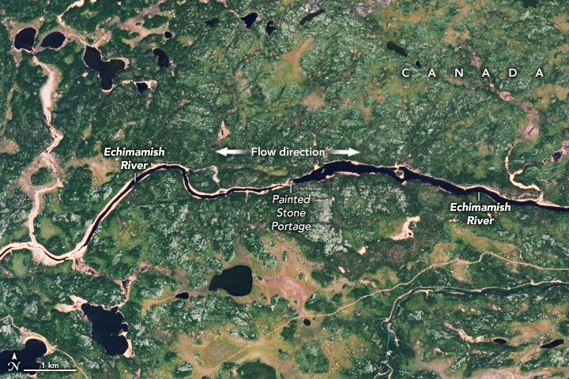

The Enigmatic Echimamish River
Found in the flat, swampy landscape of central Manitoba, Canada, the source of the Echimamish River is unusual. Instead of a remote brook or mountain spring, its headwaters are believed to be a pond formed by beaver dams in the middle of the river’s path. From there, the Echimamish—a Cree name meaning “water flowing both ways”—runs east and west from the center outward.
The OLI-2 (Operational Land Imager-2) on Landsat 9 captured this image of part of the Echimamish River on May 23, 2025. Based on firsthand accounts, the river’s flow splits from a beaver-flooded area west of Painted Stone Portage. At either end of its 67-kilometer (42-mile) length, the Echimamish connects with the Nelson River to the west and the Hayes River to the east, both of which empty into Hudson Bay about 500 kilometers (300 miles) northeast of this scene.
Fur traders found this unconventional hydrology convenient for transporting goods to trading posts on the bay, as the Hayes offered a navigable alternative to the more turbulent Nelson. Scientists analyzing the river’s dynamics, however, have described it as “baffling.”
The diverging flow pattern is subtle due to the flat terrain, according to a study of this and other unusual river systems led by civil engineer Rob Sowby of Brigham Young University. Canoers traveling the waterway may not always notice the change in current. Additionally, the point at which the flow splits may shift several kilometers depending on the location of beaver-flooded segments. (The exact location cannot be discerned from the resolution of this image or without ground-based observation.)
“The conditions have resulted in conflicting historical records, if not mythical musings, some of which are still not resolved,” the researchers wrote.
A possible explanation for this ambiguity, according to Sowby, is that the Echimamish is a river in limbo and its formation is still in progress. Perhaps it will eventually capture the upper Hayes, or it will separate completely into the Hayes and Nelson basins.
Although it may puzzle scientists today, the Echimamish River and its connected waterways have been culturally and economically important for thousands of years. Archaeological sites along the riverbanks demonstrate long-standing significance to Indigenous people, and Painted Stone Portage has remained a sacred site.
In more recent history, the Echimamish provided fur traders access to the navigable Hayes and the key trade hub at its mouth. York Factory was established there in the late 17th century and operated as a fur-trading post for the Hudson’s Bay Company for nearly 300 years. Because of this history, the Hayes, Echimamish, and a portion of the Nelson are designated as part of the Canadian Heritage Rivers System.